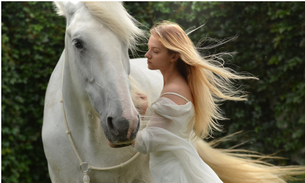

Apresentação
A presente obra reúne os textos que escrevi no ano de 2021 e que foram publicados no meu grupo do Facebook. Escrita Criativa – Mensagens e pensamentos que inspiram. Todos os textos aqui contidos são de minha autoria e expressa diferentes momentos de minha trajetória ao longo do ano. Organizei o texto por temas sendo cada tema um conjunto de pérolas que unidas formam o colar que compõe toda a obra. © Todos os Direitos de Autor reservados nos termos da Lei 50/2004, de 24 de Agosto O autor/a autoriza a partilha deste texto, e ou excertos do mesmo, desde que mantido no seu formato original, e seja obrigatoriamente mencionada a autoria do mesmo.
Coragem de viver

Dizem que a vida é para quem tem coragem e sabe viver. Só que ninguém nasce pronto e nem é corajoso o tempo todo. A vida é para quem aprende a silenciar para os barulhos do mundo e aprende a ouvir a voz do seu próprio coração e seguir sua intuição, questionando o que é imposto como verdade e buscando sempre o melhor caminho. Isso sim é coragem. Mudar o mundo de dentro pra fora, pelo amor e pela sabedoria de vida. (Flavio Hespanhol)
A Única competição que vale a pena
A única competição em que tenho entrado atualmente é comigo mesmo. Procuro viver com mais alegria e paz a cada dia.
(Flavio Hespanhol)
Ser feliz

Ser feliz não significa que sua vida será feita somente de dias felizes. É enfrentar os dias difíceis com coragem e transformar esta experiência no mais belo aprendizado.
(Flavio Hespanhol)
A Valsa da vida
Apesar de todas as suas limitações, aprenda a dançar a valsa da vida com a mente livre, sem medo de ser o que é e sem medo do amanhã. Tenha coragem de caminhar nas trajetórias do seu próprio ser, abra as janelas da sua inteligência, repense sua história e faça suas escolhas livremente.
(Flavio Hespanhol)
A criança interior
Nunca deixe sua criança interior perder a espontaneidade, liberte sua simplicidade, dê asas a sua criatividade. Seja feliz em qualquer condição de vida, deixe florescer a sua inteligência, alimente sua criança interior com sabedoria e amor e essa liberdade fortalecerá o seu coração e sua fé.
(Flavio Hespanhol)
A flor da felicidade
A partir de certa idade ser feliz é estar em paz consigo mesmo. É aprender a sorrir de si mesmo e estar ao lado de quem sorri com você.
(Flavio Hespanhol)
Ventos de paz
Que os ventos de paz acalmem nossa mente e coração. E que essa tranquilidade nos traga dias à mais.
Que a cada momento possamos nos conectar ao presente e na simplicidade do sentir possamos perceber toda a beleza do existir.
Que a vida se desenrole e no seu oscilar de sentimentos sejamos sempre paz e alegria a todo o momento.
Que essa paz seja estímulo para observar o mundo a nossa volta e fazer da vida poesia enquanto de Deus ouvimos a melodia que nos faz agradecer por poder existir e desfrutar de mais um dia.
(Flavio Hespanhol )
Sem medo da dança da vida
Se um dia a vida te tirar para dançar não se assuste se não souber os passos. É só acompanhar a melodia e com alegria se entregar ao ritmo, quando você menos esperar já será um exímio dançarino. Um grande expert na vida. E um colecionador de sonhos.
(Flavio Hespanhol)
Flor do cotidiano
A gente quer ter, mas querendo erra. Pois só sem desejos é que se vive o agora.
Mas somente quem está pronto para tudo, quem não exclui nada, irá até o fundo de sua própria existência.
Pois, se pensamos a existência do indivíduo como um cômodo de dimensões maiores ou menores, revela-se que a maioria de nós só chega a conhecer um canto do seu quarto, um local perto da janela, uma faixa na qual se anda para lá e para cá.
Eu não sou um intelectual, escrevo com o corpo. E o que escrevo é uma névoa úmida, já que não se trata apenas de narrativa, é antes de tudo vida primária que respira.
Por isso poetisa o teu caminho, cuida bem da inspiração que se despede por inútil. Pois não pode haver pecado nesta entrega, neste desfiar-se que impede o nada, neste ato de fé.
Porque o amor é um ato revolucionário. Por estados e religiões temido. Quem pelo amor é pertencido a si governa e só a ele é confessado.
Com os cumprimentos de: Belchior, Rilke, Raines Maria, Clarice Lispector, Cora Coralina, Amália Bautista e Chico César.
Compilação de ideias: Flavio Hespanhol
Pequenas coisas perfeitas

Quando aprendi a abandonar as expectativas aprendi a viver. Entendi que sou perfeito em minhas imperfeições e que minha melhor oração é meu sorriso de gratidão e a leveza de meus passos.
(Flavio Hespanhol)
Amor incondicional
Quando aprendi que Deus me ama incondicionalmente, descobri que não preciso provar meu valor a ninguém. Com isso entendi que o maior esforço que preciso fazer é para aprender mais sobre mim mesmo, sendo eu o meu maior empreendimento.
(Flavio Hespanhol)
Asas que salvam
Não me importo com as rasteiras que a vida me dá, pois tenho asas para voar acima das dificuldades.
(Flavio Hespanhol)
Sempre seja sua melhor versão
Mesmo que o mundo diga não, seja sempre a sua melhor versão. Duvide do que lhe é imposto como verdade dogmática, critique suas próprias certezas, determine os rumos de sua vida. Assuma o papel principal do teatro de sua existência e reescreva o roteiro de sua vida quantas vezes forem necessárias. Afinal você só deve satisfações a si mesmo e sua felicidade é a prioridade máxima.
(Flavio Hespanhol)
O Forte e o sábio
O fraco diz: "Somente o mais forte sobrevive."
O Sábio diz: "Sobrevive aquele que melhor se adapta."
(Flavio Hespanhol)